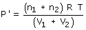
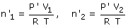
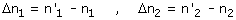
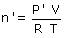

| Reparto de gases (I) Al poner en comunicación dos recipientes que contienen gas pa-sa gas del recipiente que tiene mayor presión al que la tiene me-nor hasta que ambas presiones se igualen La presión de equilibrio será la que hacen todos los moles ocu-pando todo el volumen:  En el equilibrio ambos recipientes tendrán la misma presión y se puede saber la cantidad de gas que hay en cada uno:  El cambio en la cantidad de gas de cada recipiente vale:  Estos cambios tienen que ser iguales y opuestos e indican la cantidad de gas que ha pasado de uno a otro recipiente Reparto de gases (II) Al poner en comunicación con la atmósfera un recipiente que contiene gas entrará aire en él o saldrá gas hasta que se igua-len las presiones Cuando pasan moles de la atmósfera al recipiente o viceversa la presión de este cambiará pero la presión de la atmósfera no cambiará porque tiene un volumen mucho, mucho, mucho más grande. Resumiendo: la presión de equilibrio será igual a la pre-sión atmosférica En el equilibrio la cantidad de gas que contiene el recipiente es:  (P': Presión atmosférica)El cambio en la cantidad de gas que contiene el recipiente vale: Δn = n' - n |